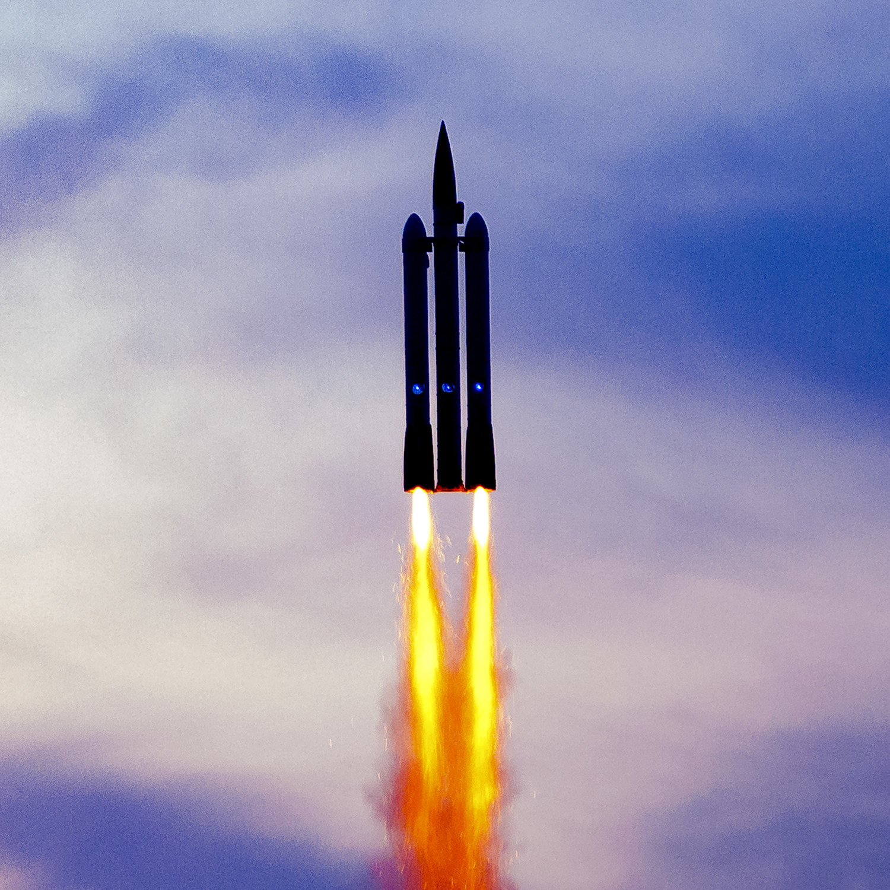

Modelarstwo rakietowe – odwzorowywanie rakiet w skali. Modele rakiet często korzystają z silników rakietowych na paliwo stałe, będących mieszaniną paliwa i utleniacza. Takie rakiety mogą wznosić się na wysokość kilometra i wyżej..

Silniki Rakietowe
Możemy wyróżnić różne klasy silników, gdzie każda litera wyżej oznacza podwojenie mocy całkowitej silnika: A – impuls całkowity 0,01-2,50, B – impuls całkowity 2,51-5,00, C – impuls całkowity 5,00-10,00, D – impuls całkowity 10,01-20,00, E – impuls całkowity 20,01-40,00, F – impuls całkowity 40,01-80,00, G – impuls całkowity powyżej 80 Ns.
Co będzie ci potrzebne na start?
Silnik - Na start zaleca się silnik kupiony o oznaczeniu między A lub D Korpus - Główna część rakiety, w której znajduje się silnik lub spadochron Czubek - aerodynamiczna część rakiety najbardziej wysunięta w górę Finy - sterowniki dzięki nim rakieta będzie mogła utrzymać kurs i być bardziej stabilna